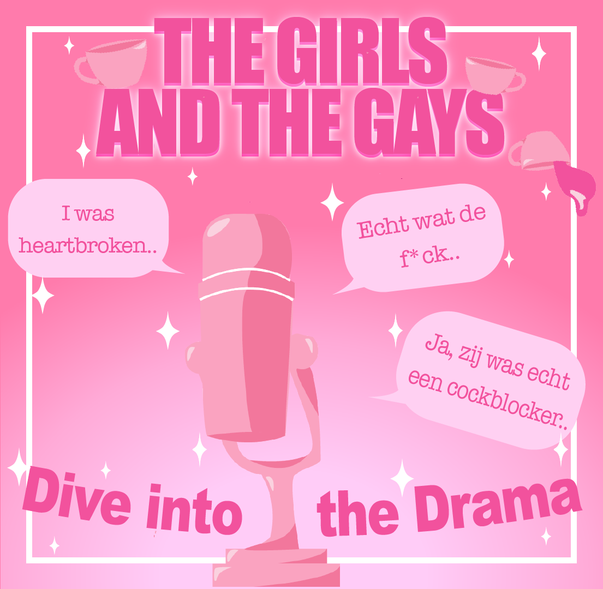

Ghosten
The Girls and the Gays
Heb jij ooit iemand gehost? Of ben je misschien zelf slachtoffer geweest van deze 'silent treatment'? Is dit de makkelijkste uitweg of is dit een teken van onzekerheid? In deze aflevering bespreken we jullie verhalen, maar ook onze eigen 'ghost' stories zullen aan bod komen.
14 okt 40min.